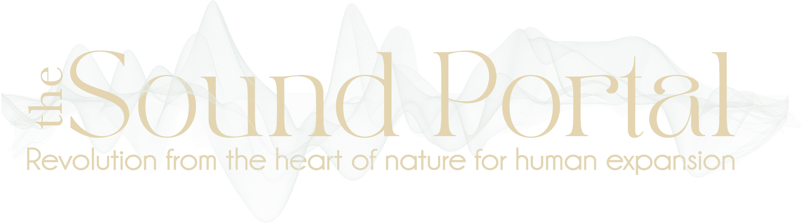
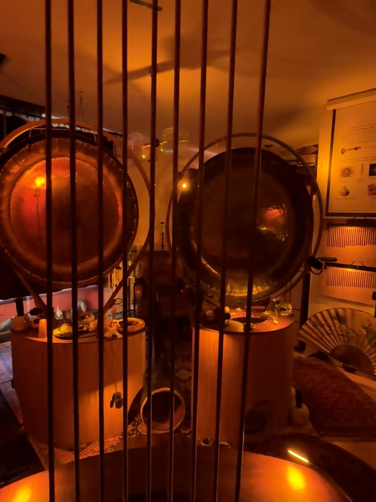

The Sound Portal is designed as a place for unprecedented experience,
through ‘as yet unheard’ elemental sounds of stone, metal, glass, wood and clay.
Ears inside our acoustic chambers hear waves equally ricochet
from all directions for a feeling of vastness
“When the sound is everywhere, you’re nowhere”
The Default Mode Network
(our brain’s system of self-construction)
may be upended
Where we lose the self embedded for a time
Catalyzing curiousness from the place of ‘not knowing’
The ‘apparent’ borders between you, others & the world becoming blurry with the nonlinear waves of sound spinning all around. Life frames of reference can be flipped, as with psychedelic experience. Insights arriving from behind the waterfall of thinking.
Air recognizes no boundaries, no borders. A single layer enveloping the earth.
Every breath of yours then, in a visceral way, reflects the borderless One.
You’ll have unprecedented experiences, which have potential to translate to new life openings
The term ‘environment’ normally refers to nature, culture, or work. Here it refers to a combination of parameters (directionless acoustic sound & Li harmony, rhythm and visuals) that together create something new for your sensory system to play with.
After each of the three experiences there will be a mini Colloquy if appropriate
(below the surface conversation)
At the end a longer exchange
Contact Alan Tower for more information at alan@SoundforLife.fun
No shoes or bare feet in the Portal.
Wear loose fresh clean clothes – no belts, buckles or loose jewelry for safety.
Session for 1 - $350
Session for 2 - $350
Session for 3 - $500
Payment:
Zelle or Paypal Friends both alan@SoundforLife.fun
Alan Tower – Lead designer
Joe Berry – musician, composer, soundworker
Amber Linder – soundworker, musician, chef
The Sound Portal design has developed over the past eight years with many collaborators. In a previous career as a performing musician, Alan created around 15 albums of original music, some involving the acoustic instruments of the Sound Portal. These are available gratis in a private link to anyone who participates in a session or three.
W. A. Mathieu - teacher, author of Harmonic Experience
Mark Deutsch - inventor of the Bazantar
Jamie Hopkins MD - Soundworker, bodywork
Rupert Spira - teacher, author of Being Aware of Being Aware
Orlando Villarraga - musician
The Resonance Group - 501c3 social profit
Mission: elevating the human spirit by connecting to sound as a force of nature